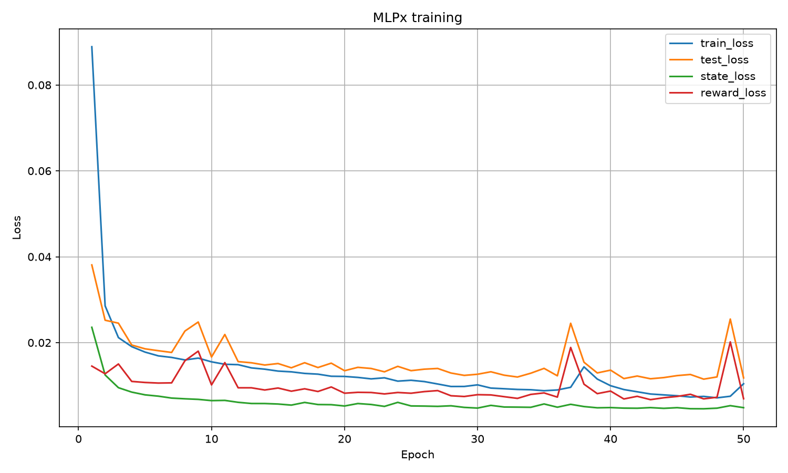
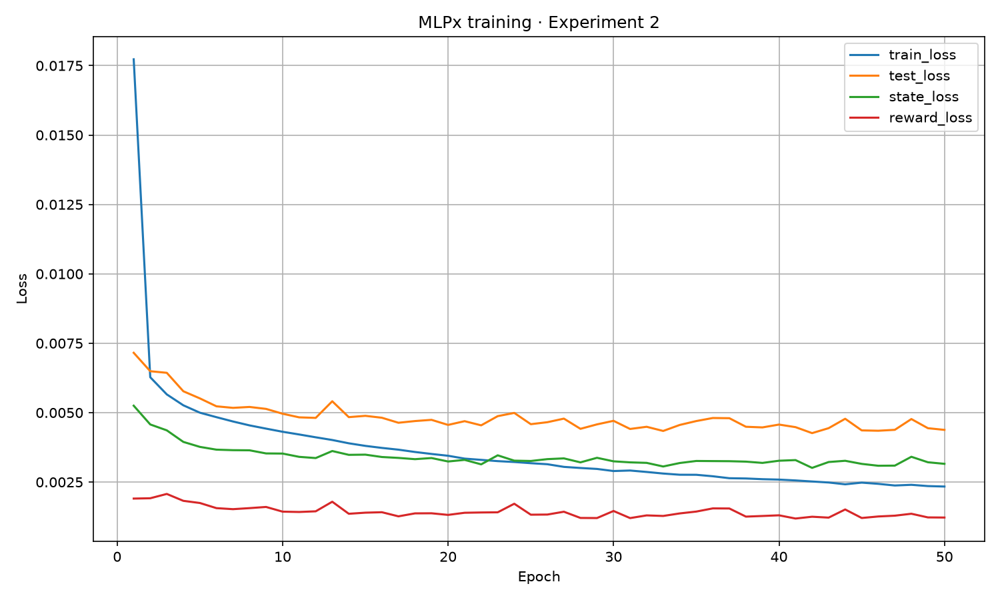
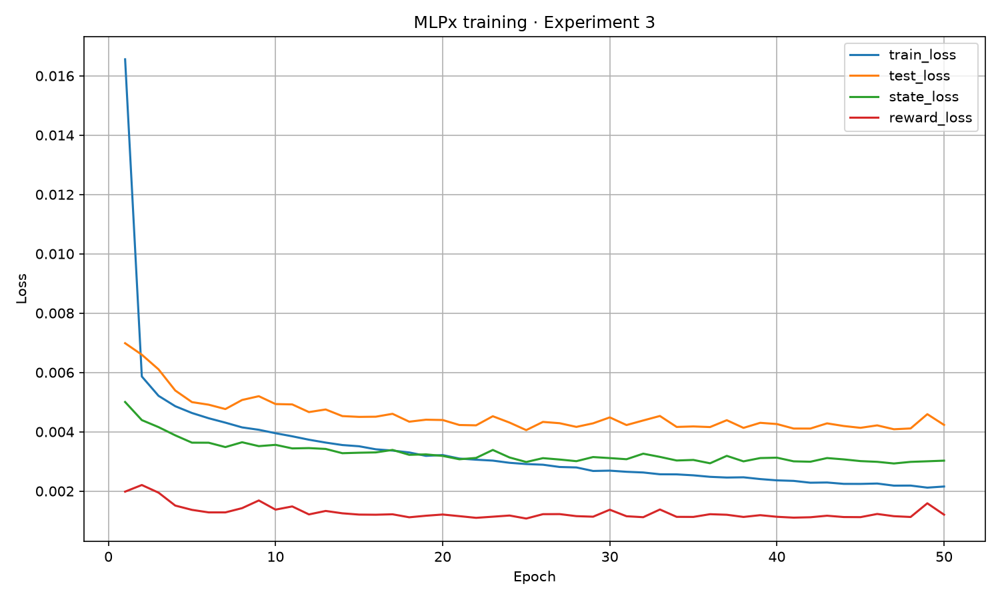

MLPx world model
MLPx is the learned one-step world model. It predicts what happens after the ego takes an action.
Input
The model receives 116 values:
| Input | Size | Meaning |
|---|---|---|
| Current state | 55 | 11 observation rows × 5 kinematic features |
| Ego action | 5 | One-hot action: LANE_LEFT, IDLE, LANE_RIGHT, FASTER, SLOWER |
| Messages | 56 | 8 spatial slots × 7 message features |
Message slots use this fixed order:
left-front, left-beside, left-rear,
same-lane-front, same-lane-rear,
right-front, right-beside, right-rearEach message contains presence, behavior type, target lane, target speed, acceleration, steering, and the vehicle crash flag. Unrequested or missing slots are zero-padded.
Architecture
116 inputs
-> Linear(256) -> ReLU
-> Linear(256) -> ReLU
-> Linear(128) -> ReLU
-> next-state head: 55 values
-> reward head: 1 valueThe model intentionally has no crash head. Crashes remain available as dataset metadata and can be analyzed separately.
How to read the results
State MAE uses normalized observations. Reward MAE compares predicted and real cumulative rewards. Action agreement measures whether the predicted best first action matches the highest real return among the tested candidates. Experiments 1 and 2 used repeated actions and excluded early-ending cases. The corrected evaluator used for future runs searches model-selected action sequences and retains terminal cases. These protocols are not directly comparable.
Experiment 1 · Baseline world model
Setup
Initial World Model baseline, trained on 26,597 combined transitions from 1,100 source episodes.
Configuration
| Setting | Value |
|---|---|
| Message encoding | Historical packed slots |
| Epochs | 50 |
| Batch size | 128 |
| Optimizer | Adam |
| Learning rate | 0.001 |
| Objective | Next-state MSE + reward MSE |
| Held-out split | Episode groups |
Commands
.venv/bin/python -m scripts.training.train_mlpx_wm \
--experiment 1 --epochs 50 --batch-size 128 --lr 1e-3The corrected dataset adapter rejects legacy packed informed records. This command records the original training settings; reproduce historical runs with their original code revision.
Results
| Metric | Best checkpoint (epoch 47) | Final epoch (50) |
|---|---|---|
| Training total loss | 0.007478 | 0.010421 |
| Test total loss | 0.011493 | 0.011781 |
| Test state MSE | 0.004594 | 0.004852 |
| Test reward MSE | 0.006899 | 0.006929 |
Graphs

Evaluation
| Horizon | Message mode | Samples | State MAE | Reward MAE | Match with real best action |
|---|---|---|---|---|---|
| 3 steps | No messages | 12 | 0.229 | 0.336 | 66.7% |
| 3 steps | All visible messages | 14 | 0.245 | 0.383 | 42.9% |
| 5 steps | No messages | 13 | 0.238 | 0.723 | 23.1% |
| 5 steps | All visible messages | 13 | 0.377 | 0.635 | 23.1% |
The three-step rollout is substantially better at matching real reward: reward error is 0.336–0.383, compared with 0.635–0.723 at five steps. It also matches the real environment's preferred action more often. This is why the active planner uses a three-step horizon.
Artifacts
Checkpoint: checkpoints/experiment_1/MLPx/best.pt.
Training CSV, run checkpoints, and plots: results/experiment_1/MLPx/experiments/20261119_110113_mlpx/.
Evaluation CSV and JSON: results/experiment_1/evaluation/mlpx_rollout/.
Notes
Historical results use the earlier encoding and filtered repeated-action evaluation. Full-episode crash rates are reported on the DQN policy page.
Additional historical measurements previously listed on the Training page: held-out one-step next-state RMSE 0.0677 and reward RMSE 0.0828; open-loop state RMSE 0.0935 at three steps and 0.1201 at five steps on random no-message sequences. These use different metrics and evaluation procedures from the rollout MAE table above.
Experiment 2 · Larger dataset world model
Setup
Trained on 223,375 transitions from 2,000 source episodes: 197,553 informed and 25,822 random no-message records.
Configuration
| Setting | Value |
|---|---|
| Message encoding | Historical packed slots |
| Epochs | 50 |
| Batch size | 128 |
| Optimizer | Adam |
| Learning rate | 0.001 |
| Objective | Next-state MSE + reward MSE |
| Held-out split | Episode groups |
Commands
.venv/bin/python -m scripts.training.train_mlpx_wm \
--experiment 2 --epochs 50 --batch-size 128 --lr 1e-3The corrected dataset adapter rejects legacy packed informed records. These settings describe the historical run.
Results
| Metric | Best checkpoint (epoch 42) | Final epoch (50) |
|---|---|---|
| Training total loss | 0.002521 | 0.002339 |
| Test total loss | 0.004263 | 0.004380 |
| Test state MSE | 0.003011 | 0.003157 |
| Test reward MSE | 0.001252 | 0.001223 |
Graphs

Evaluation
Ten evaluation episodes, up to three states per episode. Early-ending candidates were excluded.
| Horizon | Message mode | Samples | State MAE | Reward MAE | Match with real best action |
|---|---|---|---|---|---|
| 3 steps | No messages | 29 | 0.0213 | 0.0422 | 96.55% |
| 3 steps | All visible messages | 29 | 0.0574 | 0.1777 | 68.97% |
| 5 steps | No messages | 11 | 0.0385 | 0.1603 | 54.55% |
| 5 steps | All visible messages | 11 | 0.0749 | 0.2336 | 63.64% |
Artifacts
Checkpoint: checkpoints/experiment_2/MLPx/best.pt.
Training CSV, run checkpoints, and plots: results/experiment_2/MLPx/experiments/20261119_165206_mlpx/.
Evaluation CSV and JSON: results/experiment_2/evaluation/mlpx_rollout/.
Notes
The model learns short-term public vehicle dynamics well: the three-step no-message rollout has low state and reward error and agrees with the real environment's preferred action on 28 of 29 valid samples. Prediction quality degrades over five steps as errors accumulate. Message-conditioned rollouts are also harder to predict than no-message rollouts, especially at three steps, which suggests that the message representation or its training coverage still needs improvement.
These results support using a three-step planning horizon for now. They do not yet show that requesting messages improves planning; they show that the current checkpoint models the no-message behavior more accurately. The five-step comparison is preliminary because it contains only 11 valid samples per message mode.
A subsequently identified training/inference message-slot mismatch affects interpretation of message-conditioned results.
Experiment 3 · Corrected spatial encoding world model
Setup
Trained on 263,375 transitions from 2,000 source episodes, including 65,822 no-message records. The informed source preserves all eight spatial slots, including empty positions.
Configuration
| Setting | Value |
|---|---|
| Message encoding | spatial_v1 |
| Epochs | 50 |
| Batch size | 128 |
| Optimizer | Adam |
| Learning rate | 0.001 |
| Objective | Next-state MSE + reward MSE |
| Held-out split | Episode groups |
Commands
.venv/bin/python -m scripts.training.train_mlpx_wm \
--experiment 3 --epochs 50 --batch-size 128 --lr 1e-3Results
| Metric | Best checkpoint (epoch 25) | Final epoch (50) |
|---|---|---|
| Training total loss | 0.002912 | 0.002154 |
| Test total loss | 0.004056 | 0.004231 |
| Test state MSE | 0.002981 | 0.003026 |
| Test reward MSE | 0.001075 | 0.001205 |
The saved best checkpoint is from epoch 25. Training loss continues to decrease afterward, while final test loss is slightly higher than the best value, supporting selection by held-out loss rather than the final epoch. These one-step losses do not yet establish multi-step accuracy or crash reduction in the complete driving system.
Graphs

The same four curves are shown for every experiment: training total, test total, test state, and test reward loss.
Evaluation
Completed on 100 episodes, sampling every tenth rollout step with up to five states per episode. Episodes ending early reduce the number of sampled states; 299 states were evaluated in every horizon/message group. No incomplete candidate states were excluded.
| Horizon | Message mode | Samples | State MAE | Reward MAE | Match with real best action |
|---|---|---|---|---|---|
| 3 steps | No messages | 299 | 0.0323 | 0.0752 | 81.61% |
| 3 steps | All visible messages | 299 | 0.0341 | 0.0819 | 81.94% |
| 5 steps | No messages | 299 | 0.0454 | 0.2099 | 80.60% |
| 5 steps | All visible messages | 299 | 0.0481 | 0.2522 | 78.60% |
State errors use normalized observations. Reward errors compare discounted cumulative returns with discount 0.99.
.venv/bin/python -m scripts.evaluation.evaluate_mlpx_rollout \
--experiment 3 --episodes 100 --states-per-episode 5 \
--sample-every 10 --action-mode plannerThe corrected evaluator ranks model-selected continuations in the real simulator, retains early-terminal outcomes, and samples every tenth rollout step here. It does not perform exhaustive simulator search over every action sequence.
Artifacts
Checkpoint: checkpoints/experiment_3/MLPx/best.pt.
Training CSV, run checkpoints, and plots: results/experiment_3/MLPx/experiments/20261119_222630_mlpx/.
Evaluation CSV and JSON: results/experiment_3/evaluation/mlpx_rollout/.
Notes
The checkpoint records message_slot_encoding: spatial_v1. Three-step predictions have lower state and reward errors than five-step predictions, supporting the current three-step planner. The all-message and no-message three-step agreement rates differ by one state (245/299 versus 244/299), so these results do not establish a meaningful benefit from requesting messages.
The earlier large gap between message modes is absent in this evaluation, but both the encoding and evaluation protocol changed. This is not a controlled measurement of the encoding fix alone. These results test prediction and candidate ranking; full-episode DQN evaluation is still needed to measure crash rates.
Code
The implementation is src/cooperative_driving/models/MLPx/mlpx.py; its main methods are forward, predict_step, predict_batch, and load.